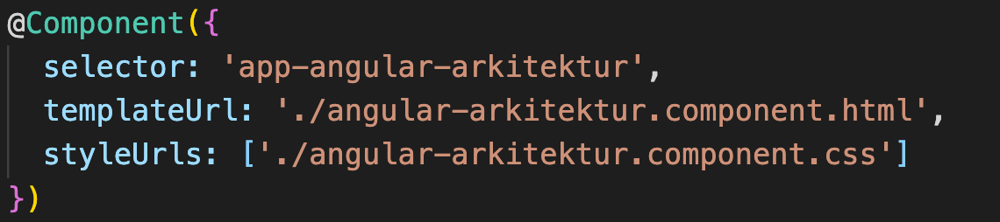
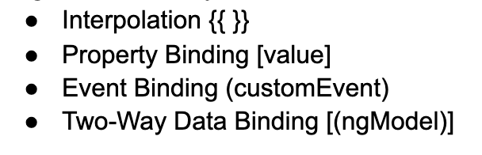

Bilden ovan är från Angular dokumentation kring Angulars Arkitektur och den beskriver Angulars fundamentala delar kring arkitekturen. Nedan kommer jag förklara lite kring varje del
Det mest fundamentala i Angular är modules. Varje angular app har en root-module, när man skapar en angular app med ng new kallas root modulen för AppModule. Det är den modulen som är grunden för hela appen. Man kan skapa flera moduler i Angular men varje ny modul behöver registreras i AppModulen. För att skapa en modul använder man sig av @NgModule() funktionen.
Angular använder sig av flertalet JavaScript moduler. Det är dessa som man importerar med @angular prefixen. Det är genom dessa moduler som man importerar in som man får tillgång till den funktionalitet som Angular tillhandahåller.
Varje Angular projekt innehåller minst en komponent och det är komponenterna som i princip bygger upp allt som renderas ut i webbläsaren. Man kan säga att hela syftet med att använda sig av Angular är för att kunna använda sig av komponenter.
Det är templates i Angular som kopplar samman html koden med Angular koden. Template säger sedan till hur Angular skall rendera ut koden i DOMen.
Metadata används för att berätta hur Angular skall processa en klass. Metadata används för att konfigurera det väntade beteendet hos en klass. Här är ett exempel på metadata som används för att dekorera en klass:
Data Bindning spelar en viktig roll för hur Angular kan kommunicera mellan templates & komponenter men även för child och parent komponenter.
I Angular finns det fyra olika sätt att skicka värden och de är:
Directives i Angular är det som egentligen säger åt en komponent hur den skall skapas. Det är direktivet som kopplar samman komponenten till DOMen.
Services är det som man i Angular använder sig av när man vill att logik eller data skall vara tillgängliga för flera komponenter eller till och med hela applikationen. Genom att använda sig av services kan man minimera mängden duplicerad kod och därmed följa DRY principen.
Dependency Injections tillhandahåller services till en komponent, dependency injections tillhandahåller bara de services som en komponent behöver. En vanlig service som dependency injections tillhandahåller till komponenterna är Routing.